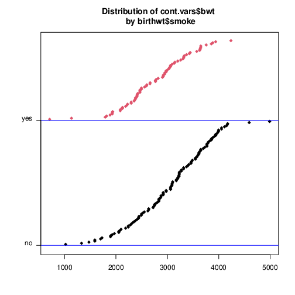

1. 导入数据文件
2. 选择描述方法
3. 运行得到结果
4. 导出结果数据
Shapiro-Wilk normality tests
data: bwt by smoke
W p-value
0 0.9869 0.3337
1 0.9830 0.4195
Shapiro-Wilk normality test
data: birthwt$bwt
W = 0.99244, p-value = 0.4353
'data.frame': 189 obs. of 10 variables:
$ low : int 0 0 0 0 0 0 0 0 0 0 ...
$ age : int 19 33 20 21 18 21 22 17 29 26 ...
$ lwt : int 182 155 105 108 107 124 118 103 123 113 ...
$ race : int 2 3 1 1 1 3 1 3 1 1 ...
$ smoke: int 0 0 1 1 1 0 0 0 1 1 ...
$ ptl : int 0 0 0 0 0 0 0 0 0 0 ...
$ ht : int 0 0 0 0 0 0 0 0 0 0 ...
$ ui : int 1 0 0 1 1 0 0 0 0 0 ...
$ ftv : int 0 3 1 2 0 0 1 1 1 0 ...
$ bwt : int 2523 2551 2557 2594 2600 2622 2637 2637 2663 2665 ...
'data.frame': 189 obs. of 10 variables:
$ low : Factor w/ 2 levels "no","yes": 1 1 1 1 1 1 1 1 1 1 ...
$ age : int 19 33 20 21 18 21 22 17 29 26 ...
$ lwt : int 182 155 105 108 107 124 118 103 123 113 ...
$ race : Factor w/ 3 levels "white","black",..: 2 3 1 1 1 3 1 3 1 1 ...
$ smoke: Factor w/ 2 levels "no","yes": 1 1 2 2 2 1 1 1 2 2 ...
$ ptl : int 0 0 0 0 0 0 0 0 0 0 ...
$ ht : Factor w/ 2 levels "no","yes": 1 1 1 1 1 1 1 1 1 1 ...
$ ui : Factor w/ 2 levels "no","yes": 2 1 1 2 2 1 1 1 1 1 ...
$ ftv : int 0 3 1 2 0 0 1 1 1 0 ...
$ bwt : int 2523 2551 2557 2594 2600 2622 2637 2637 2663 2665 ...
age lwt bwt
85 19 182 2523
86 33 155 2551
87 20 105 2557
88 21 108 2594
89 18 107 2600
91 21 124 2622
92 22 118 2637
93 17 103 2637
94 29 123 2663
95 26 113 2665
96 19 95 2722
97 19 150 2733
98 22 95 2751
99 30 107 2750
100 18 100 2769
101 18 100 2769
102 15 98 2778
103 25 118 2782
104 20 120 2807
105 28 120 2821
106 32 121 2835
107 31 100 2835
108 36 202 2836
109 28 120 2863
111 25 120 2877
112 28 167 2877
113 17 122 2906
114 29 150 2920
115 26 168 2920
116 17 113 2920
117 17 113 2920
118 24 90 2948
119 35 121 2948
120 25 155 2977
121 25 125 2977
123 29 140 2977
124 19 138 2977
125 27 124 2922
126 31 215 3005
127 33 109 3033
128 21 185 3042
129 19 189 3062
130 23 130 3062
131 21 160 3062
132 18 90 3062
133 18 90 3062
134 32 132 3080
135 19 132 3090
136 24 115 3090
137 22 85 3090
138 22 120 3100
139 23 128 3104
140 22 130 3132
141 30 95 3147
142 19 115 3175
143 16 110 3175
144 21 110 3203
145 30 153 3203
146 20 103 3203
147 17 119 3225
148 17 119 3225
149 23 119 3232
150 24 110 3232
151 28 140 3234
154 26 133 3260
155 20 169 3274
156 24 115 3274
159 28 250 3303
160 20 141 3317
161 22 158 3317
162 22 112 3317
163 31 150 3321
164 23 115 3331
166 16 112 3374
167 16 135 3374
168 18 229 3402
169 25 140 3416
170 32 134 3430
172 20 121 3444
173 23 190 3459
174 22 131 3460
175 32 170 3473
176 30 110 3544
177 20 127 3487
179 23 123 3544
180 17 120 3572
181 19 105 3572
182 23 130 3586
183 36 175 3600
184 22 125 3614
185 24 133 3614
186 21 134 3629
187 19 235 3629
188 25 95 3637
189 16 135 3643
190 29 135 3651
191 29 154 3651
192 19 147 3651
193 19 147 3651
195 30 137 3699
196 24 110 3728
197 19 184 3756
199 24 110 3770
200 23 110 3770
201 20 120 3770
202 25 241 3790
203 30 112 3799
204 22 169 3827
205 18 120 3856
206 16 170 3860
207 32 186 3860
208 18 120 3884
209 29 130 3884
210 33 117 3912
211 20 170 3940
212 28 134 3941
213 14 135 3941
214 28 130 3969
215 25 120 3983
216 16 95 3997
217 20 158 3997
218 26 160 4054
219 21 115 4054
220 22 129 4111
221 25 130 4153
222 31 120 4167
223 35 170 4174
224 19 120 4238
225 24 116 4593
226 45 123 4990
4 28 120 709
10 29 130 1021
11 34 187 1135
13 25 105 1330
15 25 85 1474
16 27 150 1588
17 23 97 1588
18 24 128 1701
19 24 132 1729
20 21 165 1790
22 32 105 1818
23 19 91 1885
24 25 115 1893
25 16 130 1899
26 25 92 1928
27 20 150 1928
28 21 200 1928
29 24 155 1936
30 21 103 1970
31 20 125 2055
32 25 89 2055
33 19 102 2082
34 19 112 2084
35 26 117 2084
36 24 138 2100
37 17 130 2125
40 20 120 2126
42 22 130 2187
43 27 130 2187
44 20 80 2211
45 17 110 2225
46 25 105 2240
47 20 109 2240
49 18 148 2282
50 18 110 2296
51 20 121 2296
52 21 100 2301
54 26 96 2325
56 31 102 2353
57 15 110 2353
59 23 187 2367
60 20 122 2381
61 24 105 2381
62 15 115 2381
63 23 120 2410
65 30 142 2410
67 22 130 2410
68 17 120 2414
69 23 110 2424
71 17 120 2438
75 26 154 2442
76 20 105 2450
77 26 190 2466
78 14 101 2466
79 28 95 2466
81 14 100 2495
82 23 94 2495
83 17 142 2495
84 21 130 2495
age lwt bwt
Min. :14.00 Min. : 80.0 Min. : 709
1st Qu.:19.00 1st Qu.:110.0 1st Qu.:2414
Median :23.00 Median :121.0 Median :2977
Mean :23.24 Mean :129.8 Mean :2945
3rd Qu.:26.00 3rd Qu.:140.0 3rd Qu.:3487
Max. :45.00 Max. :250.0 Max. :4990
low age lwt race smoke
no :130 Min. :14.00 Min. : 80.0 white:96 no :115
yes: 59 1st Qu.:19.00 1st Qu.:110.0 black:26 yes: 74
Median :23.00 Median :121.0 other:67
Mean :23.24 Mean :129.8
3rd Qu.:26.00 3rd Qu.:140.0
Max. :45.00 Max. :250.0
ptl ht ui ftv bwt
Min. :0.0000 no :177 no :161 Min. :0.0000 Min. : 709
1st Qu.:0.0000 yes: 12 yes: 28 1st Qu.:0.0000 1st Qu.:2414
Median :0.0000 Median :0.0000 Median :2977
Mean :0.1958 Mean :0.7937 Mean :2945
3rd Qu.:0.0000 3rd Qu.:1.0000 3rd Qu.:3487
Max. :3.0000 Max. :6.0000 Max. :4990
No. of observations = 189
Var. name obs. mean median s.d. min. max.
1 age 189 23.24 23 5.3 14 45
2 lwt 189 129.81 121 30.58 80 250
3 bwt 189 2944.59 2977 729.21 709 4990
[1] 189
[1] 23.2381
[1] 5.298678
age lwt bwt
5.298678 30.579380 729.214295
vars n mean sd median trimmed mad min max range skew kurtosis
age 1 189 23.24 5.30 23 22.90 5.93 14 45 31 0.71 0.53
lwt 2 189 129.81 30.58 121 126.07 20.76 80 250 170 1.38 2.25
bwt 3 189 2944.59 729.21 2977 2961.76 834.70 709 4990 4281 -0.21 -0.14
se
age 0.39
lwt 2.22
bwt 53.04
smoke age lwt bwt
1 no 23.42609 130.8957 3055.696
2 yes 22.94595 128.1351 2771.919
smoke mean.cont.vars$bwt
1 no 3055.696
2 yes 2771.919
smoke age lwt bwt
1 no 5.467706 28.42700 752.6566
2 yes 5.047424 33.78673 659.6349
smoke sd.cont.vars$bwt
1 no 752.6566
2 yes 659.6349
smoke race age lwt bwt
1 no white 26.02273 138.8409 3428.750
2 yes white 22.82692 126.3077 2826.846
3 no black 19.93750 149.4375 2854.500
4 yes black 24.10000 142.6000 2504.000
5 no other 22.36364 119.1455 2815.782
6 yes other 22.50000 124.0000 2757.167
no yes
3055.696 2771.919
no yes
3055.696 2771.919
no yes
NA NA
For birthwt$smoke = no
obs. mean median s.d. min. max.
115 3055.696 3100 752.657 1021 4990
For birthwt$smoke = yes
obs. mean median s.d. min. max.
74 2771.919 2775.5 659.635 709 4238
No. of observations = 189
Var. name obs. mean median s.d. min. max.
1 age 189 23.24 23 5.3 14 45
2 lwt 189 129.81 121 30.58 80 250
3 bwt 189 2944.59 2977 729.21 709 4990
Descriptive statistics by group
group: no
vars n mean sd median trimmed mad min max range skew
age 1 115 23.43 5.47 23 23.09 4.45 14 45 31 0.77
lwt 2 115 130.90 28.43 124 127.62 20.76 85 241 156 1.30
bwt 3 115 3055.70 752.66 3100 3086.14 816.91 1021 4990 3969 -0.28
kurtosis se
age 1.00 0.51
lwt 2.00 2.65
bwt -0.32 70.19
------------------------------------------------------------
group: yes
vars n mean sd median trimmed mad min max range skew kurtosis
age 1 74 22.95 5.05 22.0 22.60 5.93 14 35 21 0.55 -0.73
lwt 2 74 128.14 33.79 120.0 123.58 22.24 80 250 170 1.45 2.22
bwt 3 74 2771.92 659.63 2775.5 2782.55 630.10 709 4238 3529 -0.28 0.23
se
age 0.59
lwt 3.93
bwt 76.68
Descriptive statistics by group
group: no
vars n mean sd median trimmed mad min max range skew kurtosis
X1 1 115 3055.7 752.66 3100 3086.14 816.91 1021 4990 3969 -0.28 -0.32
se
X1 70.19
------------------------------------------------------------
group: yes
vars n mean sd median trimmed mad min max range skew kurtosis
X1 1 74 2771.92 659.63 2775.5 2782.55 630.1 709 4238 3529 -0.28 0.23
se
X1 76.68
# A tibble: 2 × 3
smoke mean.bwt sd.bwt
1 no 056. 753.
2 yes 772. 660.
# A tibble: 6 × 4
# Groups: smoke [2]
smoke race mean.bwt sd.bwt
no white 429. 710.
no black 854. 621.
no other 816. 709.
yes white 827. 626.
yes black 504 637.
yes other 757. 810.
